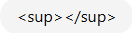

Formula of Water = H2O
(Subscript Tag) tag ka use niche likhne ke liye hota haiFormula =
102
((Superscript Tag) tag ka use niche likhne ke liye hota hai
ka use upar likhne ke liye hota hai
output: 10²
number "2" thoda upar aa jata hai )